第八章 数据素养基础
第七章把文献题录转化为结构化数据和关系网络，展示了信息对象如何成为可计算、可复核的研究材料。本章把视野进一步扩展到问卷、观察、访谈编码、平台日志和统计资料等教育研究数据。数据素养不是“会不会写代码”的同义词，也不是数据科学专业学生的专属能力；它是一种把研究问题转化为可检验证据、理解数据如何产生、判断分析能说明什么和不能说明什么，并把结果清楚传达给他人的能力。本章从日常可见的数据痕迹出发，逐步进入数据结构、数据获取、可复现分析和初步建模，重点不是记住某个软件命令，而是建立一条完整而审慎的数据工作路径。
8.1 从行为痕迹到研究证据
一篇论文被下载，看起来只是一次普通的网络访问；但如果把下载发生的时间、地点、次数以及访问者所在地区有序记录下来，它就可能成为观察科研活动的证据。图8-1用世界地图上的标记点显示论文下载地点，提醒我们：许多原本不被当作“数据”的数字痕迹，在明确问题、遵守伦理并经过整理后，都可以成为研究材料。
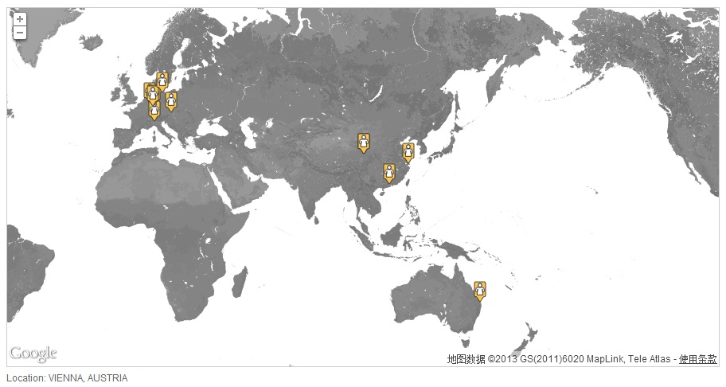
真正的分析并不止于“在什么地方发生”。同一批下载记录还可以按小时、国家或工作日与休息日重新组织。下图把美国、德国和中国的日内下载量分别画成折线，并比较工作日和周末。它说明同一份原始记录可以支撑不同层次的问题：何时活跃、不同地区的节律是否相似、休息日是否存在差异。也正因如此，数据分析的第一步不是立即计算，而是界定“时间”“地点”“人”和“事”各指什么。
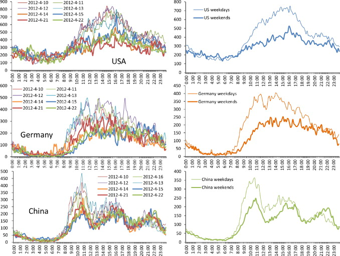
这类例子揭示了数据素养的第一个原则：记录不是结论，数据只有放回产生它的问题和情境中才有意义。地图和折线图提供的是线索，不是对“科学家是否加班”之类问题的直接证明。研究者必须说明数据来自何处、记录了谁、遗漏了谁，以及选择何种比较方式。
8.2 为什么每个学科都需要数据素养
数据并不只属于统计学或计算机科学。文学研究者可以利用词频、句法和写作风格讨论作者归属；语言学研究者可以借助语料库考察语言使用；新闻传播研究者可以用数据呈现公共议题；教育研究者则可通过问卷、课堂观察、访谈编码、学习平台日志和学习结果理解教育现象。数据方法的价值不在于把一切问题压缩为数字，而在于让判断的依据可以被追溯、检查和讨论。
电子表格是最常见的数据形态之一。图8-3包含学科名称、论文数量、被引次数、下载量、评论数等字段。它看似只是一个表格，其实已经隐含了一组分析选择：每一行代表一个学科，每一列代表一个指标，指标的统计口径、时间范围和单位决定了表格能够支持哪些比较。
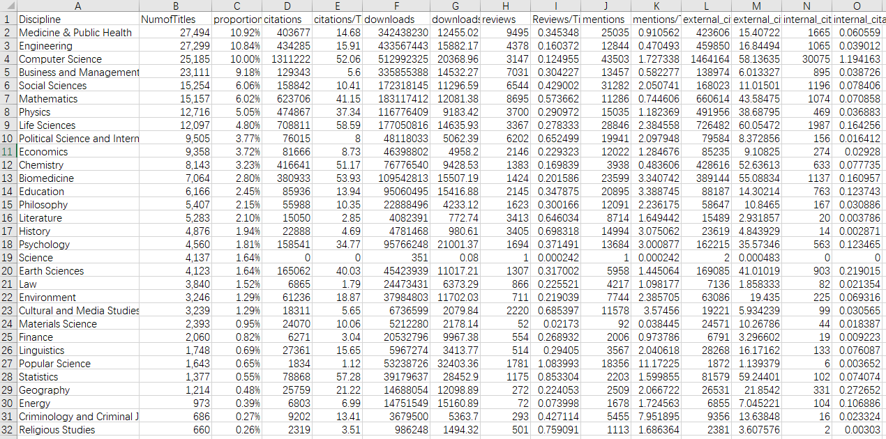
数据也不一定是数字或表格。图8-4先把婚礼照片按时间排列，再将每张照片中最丰富的颜色编码成小色块，形成一张“颜色—时间”图。照片因此从可观看的图像变成可分析的材料：研究者可以观察拍摄活动何时集中、仪式和宴会的视觉特征有何不同。这里的关键不是颜色本身，而是先把图像转化为可说明、可重复处理的特征。

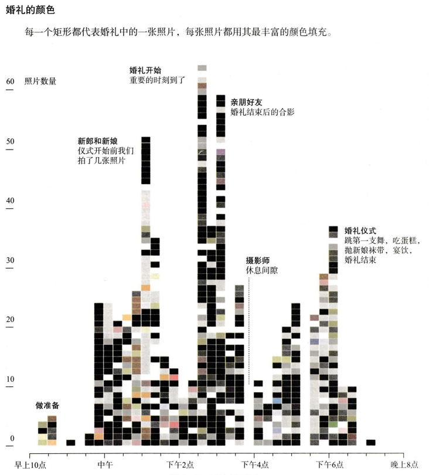
一个课堂实验中的完整数据过程
以“如何安排高中生物课中的植物光合作用实验”为例，可以清楚看到数据素养如何贯穿研究和教学的全过程。教师若只让学生观察植物“长得好不好”，结论容易停留在印象层面；若把问题设计为“不同光照强度是否与植物生长和光合作用指标有关”，就需要依次完成以下工作：
- 实验设计。确定研究对象、观察时长和光照处理水平；尽量使土壤、浇水、温度、植株种类等其他条件保持一致。这里要先区分自变量、因变量和可能干扰结果的变量。
- 数据收集。记录各组的光照强度、新叶数量与大小、叶绿素含量、二氧化碳吸收量等，并为每一次测量保留日期、组别和测量方法。
- 数据处理。检查单位是否统一、同一植株是否被重复录入、缺失值代表什么；把原始记录和清洗后的数据分开保存。
- 数据分析与可视化。计算不同组的平均值和离散程度，用折线图观察随时间的变化，用条形图或点图比较各组结果。图形的作用是帮助发现模式，而不是装饰报告。
- 数据解释与科学沟通。将结果放回光合作用理论和实验条件中讨论。例如，在一定范围内较强光照可能与较快生长有关，但若光照继续增强，是否会产生光抑制，仍需由数据和实验设计共同回答。
这个例子表明，数据素养由实验设计、数据收集、数据处理、数据分析、数据可视化、数据解释和科学沟通构成。它不是分析结束时补上的一个步骤，而是贯穿整个证据链的能力。
8.3 什么是数据：从文件到数据说明
可以把数据理解为对事实、状态或行为的记录。数字、文本、图像、音频、视频、地理位置和平台日志都可能成为数据；但数据本身不等于信息，更不等于结论。只有把它放入研究问题，说明其来源、结构和处理方式，数据才可能转化为可用证据。
常见文件格式包括：Excel 文件（.xls、.xlsx）、纯文本文件（.txt、.csv、.tsv、.dat）、统计软件专用文件（如 SPSS 的 .sav、Stata 的 .dta），以及 JSON、XML 等半结构化文件。不同后缀首先影响数据如何被读取：CSV 通常以逗号分隔字段，TSV 通常以制表符分隔字段，Excel 可以存放多个工作表和格式信息，专用格式则可能保留变量标签和值标签。文件后缀不能保证数据质量，却能提醒使用者先确认编码、分隔符、变量类型和所需软件。
| 文件类型 | 常见用途 | 初次打开时应检查什么 |
|---|---|---|
.xlsx、.xls | 表格记录、问卷导出、人工整理的数据 | 工作表、合并单元格、日期格式、公式是否被误当成数值 |
.csv、.tsv、.txt | 跨软件交换、平台导出、批量数据 | 分隔符、字符编码、缺失值标记、首行是否为变量名 |
.sav、.dta | SPSS、Stata 等软件的分析数据 | 变量标签、值标签、测量水平、筛选和加权设置 |
.json、.xml | 平台接口、网页或半结构化记录 | 嵌套层级、键名含义、数组中每个对象是否代表同一分析单位 |
仅有数据文件还不够。图8-5展示一篇论文的“数据可用性声明”和“代码可用性声明”部分：研究者不仅给出数据所在位置，也说明数据集、补充材料和代码之间的关系。对于课程作业、研究项目和正式论文，都应尽早形成类似的说明：数据从哪里来、能否共享、谁可以访问、使用什么许可、哪些处理步骤改变了原始记录。期刊的数据政策和数据仓储指南也都强调将数据存入合适的正式仓储，并说明其可用性。
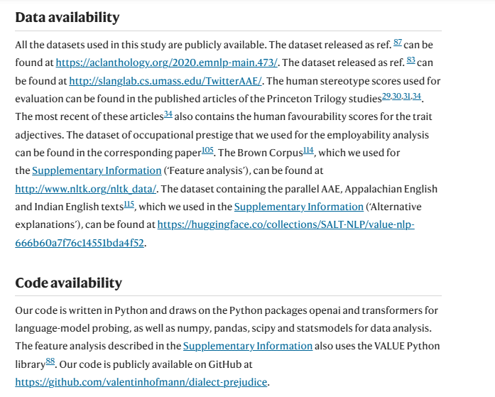
8.4 数据集、变量、观测与元数据
数据集（dataset）是一组按照规则组织的数据。它可以是结构化表格、半结构化的 JSON 或 XML，也可以是文本、图像和音频的集合。教育研究中最常见的结构化数据是数据框（data frame）：每一列是一个变量，每一行是一个观测样本，每个单元格是某个样本在某个变量上的观测值。
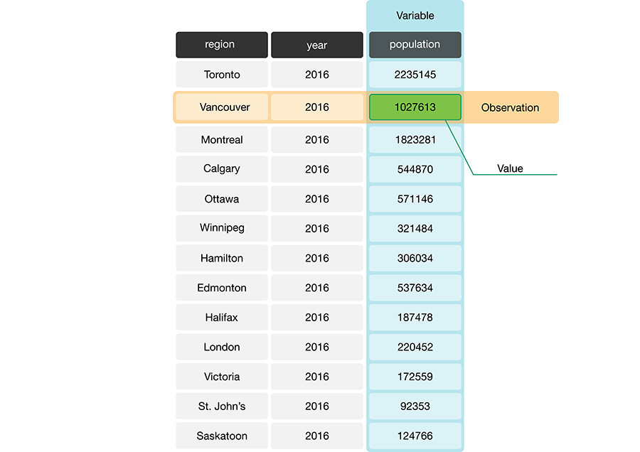

变量是研究对象可被测度的属性。常见类型包括：
- 数值型变量：可以连续，如身高、学习时长、温度；也可以离散，如缺课次数、答对题数。
- 类别型变量：用于区分组别，如学校类型、学段、专业；其取值之间通常没有大小顺序。
- 二元变量：只有两个取值，如是否通过、是否使用某平台。它是类别型变量的特殊情形。
- 有序变量：类别具有顺序，如“非常不同意”到“非常同意”的五级量表；顺序存在并不意味着相邻等级间距完全相等。
- 文本和时间变量：开放式回答、课堂讨论记录、日期和时间戳常常需要不同于数值的处理方式。
变量名称之外，还需要元数据，即“关于数据的数据”。一份最小的数据说明至少应包含：变量名及中文含义、单位与取值范围、类别编码、缺失值含义、测量或提取方法、采集时间、数据来源和修改记录。没有这些信息，即使得到一张完整的表，也很难可靠地解释它。
| 字段 | 示例 | 必须记录的说明 |
|---|---|---|
student_id | S001 | 是否为匿名编号；是否可跨表匹配；不得用真实姓名替代 |
study_time | 125 | 单位是分钟还是小时；是自报、平台日志还是观察记录 |
satisfaction | 1—5 | 每个数值对应的量表选项；是否允许“不适用”或拒答 |
date | 2026-03-01 | 日期格式、时区、记录周期和是否存在补录 |
missing_code | NA、-99 | 缺失是未回答、跳题、无记录，还是不适用；不得把它直接当作 0 |
8.5 分析之前，先理解数据如何产生
数据分析中最危险的错误，往往发生在运行代码之前。开始分析前，应依次回答：谁采集了这些数据？采集对象是谁？何时、何地、以什么规则采集？一行代表谁或什么？变量如何定义？谁没有被记录？缺失、重复和异常值分别意味着什么？样本能否支持想要推广的结论？这些问题决定后续统计的解释范围。
辛普森悖论：总体趋势可能掩盖分组趋势
辛普森悖论指的是：同一数据在若干子组内呈现的关联，在把子组合并后可能消失，甚至反向。它不是数学错误，而是在提醒我们总体数字混合了不同构成的群体。斯坦福哲学百科对这一现象的概括是：两个变量之间的关系会因是否按照子群体分开观察而出现、消失或反转。
这一教学用例将所有年龄段患者合并时，运动时间与病情恶化风险呈正相关；但分别看50岁以下和50岁以上两组时，两组都呈负相关。造成反转的关键不是“运动有害”或“运动无效”，而是年龄同时影响运动时间和病情风险，且不同年龄组在合并数据中的比例不同。
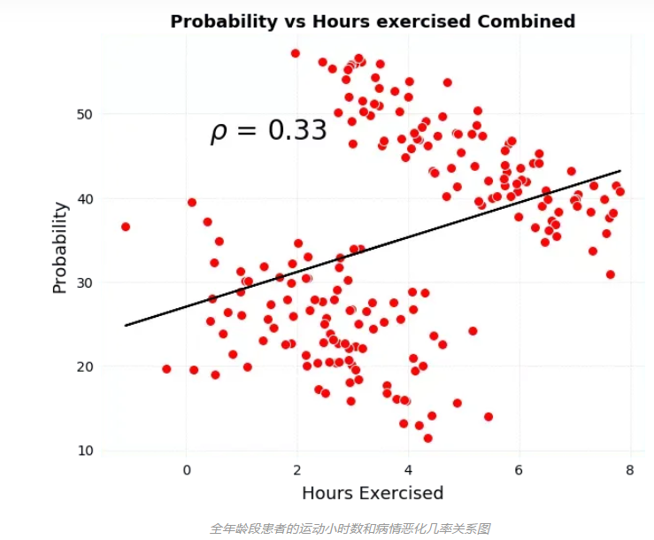
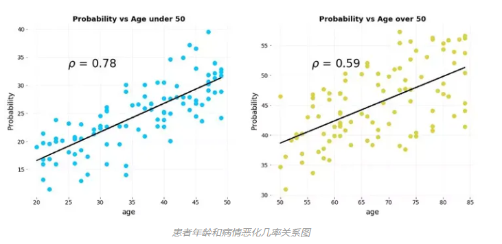
在教育研究中，类似问题很常见。若把不同学段、学校类型、地区或年份的数据直接合并，可能把结构差异误读成某项教学措施的效果。文献计量也会遇到类似风险：忽略国家发文规模、学科引用习惯、文献增长速度或性别结构，都会让简单比较失去意义。正确做法不是“把所有变量都控制掉”，而是依据研究问题和理论，识别需要分层、比较或在模型中处理的关键差异，并报告这些选择。
幸存者偏差：缺失的对象同样重要
幸存者偏差是指只根据“仍然可见、仍然留下记录或最终成功”的对象作判断，而忽略了未被观察到的失败者或退出者。经典的飞机弹孔图把弹孔集中在返航飞机的机翼和机身上；若只按弹孔加固这些部位，就忘记了没有返航的飞机没有进入样本。真正需要追问的是：哪些位置受损后使飞机无法回来，因此没有留下弹孔记录？
教育数据也可能存在同类偏差。只调查愿意完成问卷的学生，可能遗漏低参与者；只分析仍在使用平台的用户，可能遗漏已经流失者；只阅读发表出来的研究，可能遗漏未发表或结果不显著的研究。分析前应明确样本如何进入数据集，以及谁被排除在外。
8.6 数据从哪里来：获取、复用与合规
数据来源并不是越多越好，而是要与研究问题、分析单位和伦理要求相匹配。常见来源可分为自有数据、论文数据、商业数据库、政府数据库、国际组织数据库、开放数据仓储和软件自带数据集。
| 来源 | 可以回答的问题 | 使用时应特别检查 |
|---|---|---|
| 自有数据：问卷、实验、观察、访谈编码、合规爬取 | 具体课堂、学校或人群的经验问题 | 研究设计、抽样、知情同意、测量工具质量、隐私保护 |
| 论文附带数据和数据论文 | 复现或拓展既有研究 | 数据字典、版本、许可、与论文方法是否一致 |
| 商业数据库 | 行业、市场、学术或平台数据的比较 | 覆盖范围、更新频率、授权条件、指标口径和可导出性 |
| 政府与国际组织数据库 | 宏观趋势、区域比较、长期序列 | 指标定义、统计制度变化、行政边界和发布时间 |
| 开放数据仓储 | 可复用的学科数据和研究材料 | 学科适配性、DOI、许可证、引用格式、文件和说明是否齐全 |
| 软件自带数据集 | 学习代码、练习统计方法 | 数据是否只是教学示例，是否适合推广到真实问题 |
对于论文数据，除了阅读正文，还应寻找补充材料、数据可用性声明和代码说明。一些期刊专门发表数据描述，另一些研究论文也会在文末或投稿系统中要求说明数据位置。选择开放仓储时，应优先查找学科认可的专门仓储；若没有合适的专门仓储，再考虑通用仓储。图8-9中的目录把仓储按生物、健康、地球环境、物理、材料、社会科学和通用仓储分类，说明“在哪里找数据”和“数据是否适合该领域”是相连的问题。
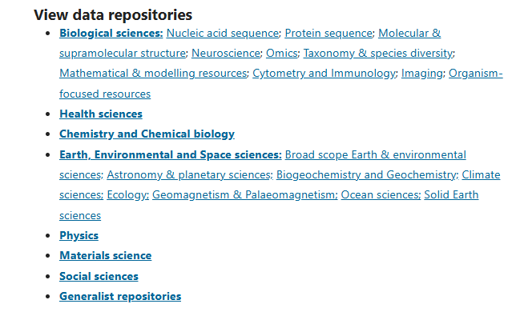
投稿界面要求作者说明是否有相关数据集，并提供数据的DOI或存放地址。这种“数据可用性声明”把数据管理前置到研究过程中。对教育研究者而言，即使数据不能公开，也应说明不能公开的原因，例如涉及未成年人、个人信息、学校协议或受限访问；不能以“数据不公开”代替数据管理。
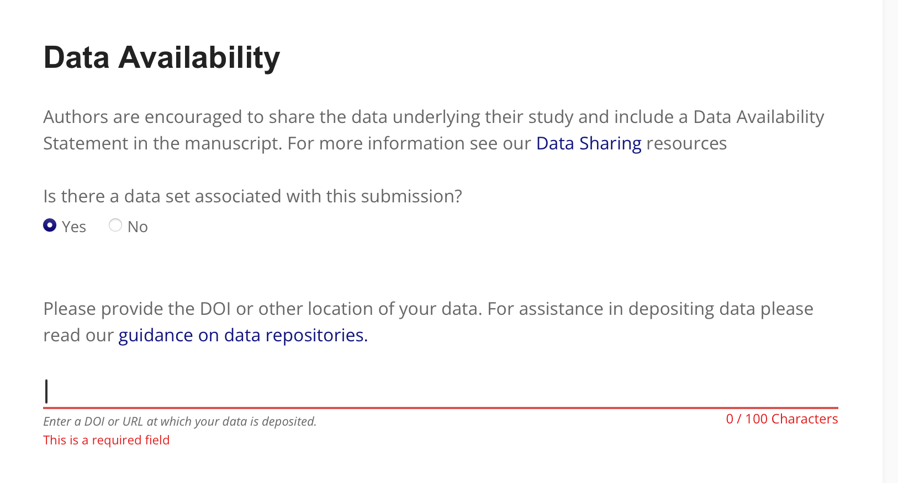
下列入口可以作为检索起点，而不应被视为固定清单。商业数据方面，可关注中国经济社会大数据平台、UK Biobank、Statista等；政府数据方面，可从国家数据、统计年鉴、地方公共数据开放平台、国家知识产权局和教育部统计资料进入；国际比较可检索OECD、国际货币基金组织、联合国数据和商品贸易统计、全球生物多样性信息机构等；通用开放仓储则包括Mendeley Data、Kaggle等。进入任何平台后，第一件事都应是阅读指标定义、数据说明、更新时间和使用条款，而不是立刻下载。
从小数据到多源数据
同一数据集在不同研究者手中可能回答完全不同的问题；当多个来源可以在概念和时间上合理对应时，合并数据还可以扩展研究视野。图8-11左侧以通话记录为例：先从原始记录提取特征，再与抽样调查数据建立模型，用模型帮助补全空间层面的信息；右侧比较模型估计结果与人口健康调查地图。图示的重点不是照搬某项具体结果，而是说明多源数据融合需要经历“定义共同对象—建立可匹配字段—处理时间和空间尺度—评估结果”的过程。
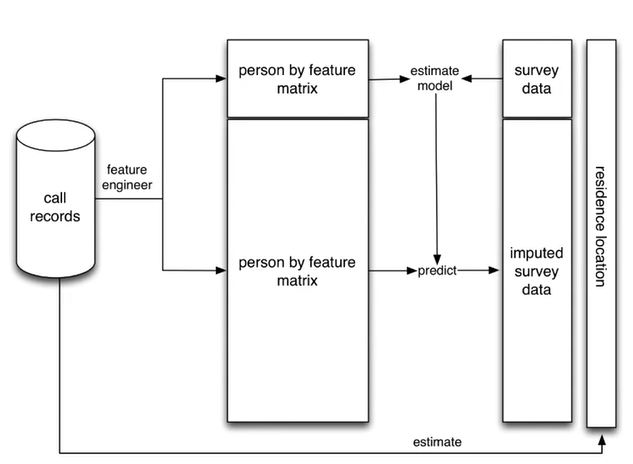
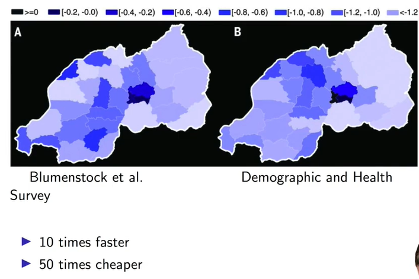
多源数据并不天然更可靠。将问卷与平台日志合并前，要确认是否有合规的匿名标识；将学校数据与地区统计数据合并前，要确认地理层级和年份是否一致；将小样本问卷与大规模平台记录比较时，要分清两者各自代表什么。任何“合并”都应保留原始来源、匹配规则和不能匹配的记录数。
8.7 用 R 建立可复现的数据工作流
数据素养不要求每位读者立刻成为程序员，但需要理解为什么代码和脚本对研究可靠性有价值。R是免费、开源的统计计算和图形软件环境，可在不同操作系统上运行；其官方站点提供下载入口和CRAN镜像。R Project将R定义为用于统计计算和图形的自由软件环境。可以用“发动机与驾驶舱”的比喻区分R与RStudio：R负责执行计算，RStudio则是帮助编写、运行、查看对象、图形、文件和帮助文档的集成开发环境。
对于初学者，网页端环境可以减少安装配置的门槛；本地环境则更便于长期管理文件和项目。无论使用何种界面，最重要的是把数据、脚本、输出和说明组织在同一项目中。不要依赖记忆复现点击路径，也不要只保存最终图表。
本地学习可按“先 R、后界面”的顺序准备：先从 R Project 提供的 CRAN 镜像安装 R，再安装 RStudio 等集成开发环境；若暂时不希望处理本地配置，也可使用浏览器端环境完成入门练习。安装完成后，不必急于安装大量软件包，先运行自带数据集和基础命令，确认工作目录、文件编码和帮助系统都正常，再逐步加入课程所需的包。
从一个可运行的例子开始
学习R时可以采用“Cake First”的策略：先得到一个可见结果，再逐步理解代码。下面的代码把R自带的 mtcars 数据转为矩阵，并绘制按列标准化的热图。热图以颜色表示各车型在不同指标上的相对水平，旁边和上方的树状图按相似性排列对象和变量。它不是结论本身，而是快速发现结构、异常和可能分组的探索工具。
data_matrix <- as.matrix(mtcars)
heatmap(data_matrix, scale = "column")
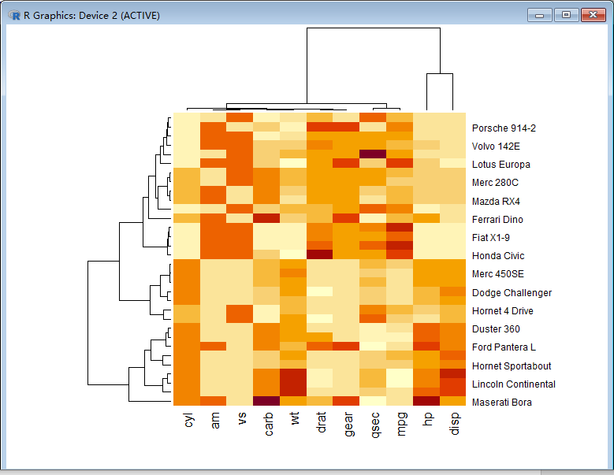
稍复杂的例子可以同时把多个变量映射到一张图中。图8-14的气泡图以人均 GDP 为横轴、预期寿命为纵轴、人口为气泡大小、洲别为颜色。这样做的好处是能在同一视觉空间中观察多个变量；风险是颜色、大小和坐标的含义容易被忽略。因此，读图时应先读坐标轴、图例、单位、年份和数据来源，再讨论图形所呈现的模式。
library(ggplot2)
library(dplyr)
library(gapminder)
gapminder |>
filter(year == 2007) |>
ggplot(aes(x = gdpPercap, y = lifeExp,
size = pop, color = continent)) +
geom_point(alpha = 0.5)
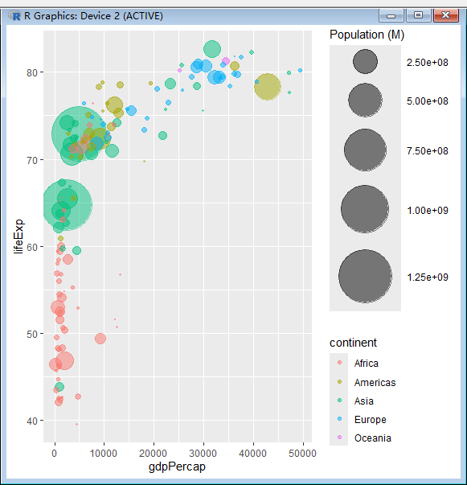
最小的 R 工作习惯
初学阶段不必记住大量函数，但应建立四个基本习惯：安装所需包、加载包、查看数据集说明、让代码可重新运行。RStudio 的四个常见区域分别用于编写脚本、运行命令、查看对象和历史、浏览文件/图形/帮助；熟悉这个界面有助于把一次分析保存在项目里，而不是散落在多个窗口中。
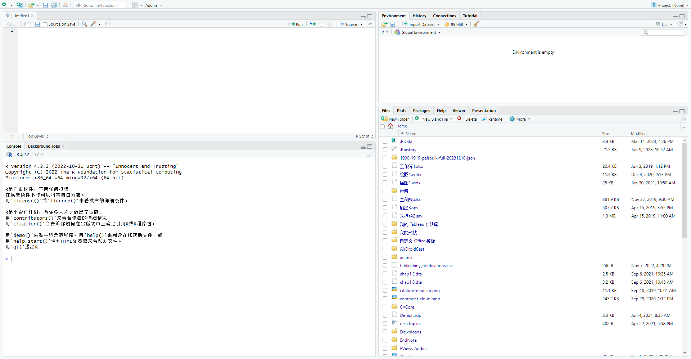
install.packages("ggplot2") # 只在尚未安装时运行
library(ggplot2) # 每次会话需要时加载
data(package = "datasets") # 查看包中可用的数据集
?mtcars # 阅读 mtcars 的变量说明
str(mtcars) # 检查变量类型与结构
软件包自带数据集很适合练习：它们通常体量适中、能够立即运行，也便于学习 data()、帮助文档和数据结构检查。但教学数据集并不等于真实世界的代表性样本。练习代码时，应始终保留一个问题：这些数据原本记录什么，能支持怎样的结论，不能支持怎样的推广？
8.8 从描述统计到模型：分析是逐级推进的
数据分析不应从最复杂的模型开始。更稳妥的路径是：先检查数据结构和质量，再做描述统计和可视化，随后才根据研究问题选择回归、聚类或机器学习等方法。
描述统计用少量指标概括数据的整体特征。均值、中位数和众数反映集中趋势；全距、方差、标准差和四分位数反映离散程度；偏度和峰度帮助观察分布形态。它们回答的是“数据大致是什么样”，而不是“某个变量导致了什么”。
回归分析用于描述或预测变量之间的条件关系。在线性回归中，Y ~ X1 + X2 + ... + Xk 表示以Y为响应变量，以若干X为预测变量。women教学数据示例拟合身高与体重的线性关系；输出中的系数、显著性和决定系数（R²）描述的是这份样本中模型的拟合情况。即使系数显著，也不能仅凭该模型断言身高“造成”体重变化，更不能把一个教学数据集的结果直接推广到所有人群。
fit <- lm(weight ~ height, data = women)
summary(fit)
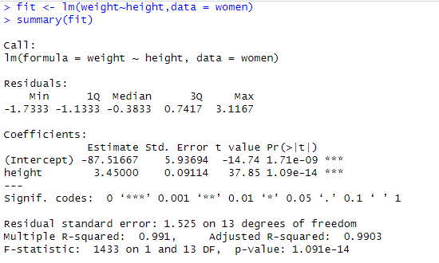
可视化帮助研究者在建模前发现趋势、离群值和分组结构，并在分析后把结果传达给读者；下一章将专门讨论图表选择和制作。机器学习则通常面向分类、回归或预测任务，但它不是跳过研究设计的捷径。图8-17将机器学习过程画为一条流程：从初始数据出发，进行探索、清洗和特征处理，再划分训练集和测试集，训练模型并用恰当指标评价性能。每一步都可能引入偏差，因此“预测准确”不自动代表“解释正确”。
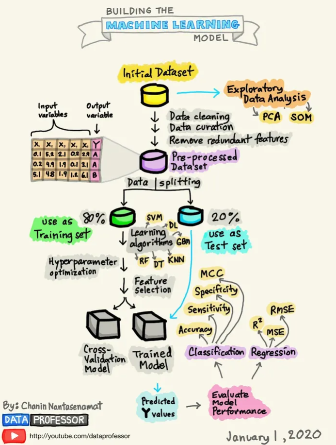
基于 iris 数据集的分类代码可以作为理解流程的练习：先定义预测目标，再选择学习器、训练模型、对新数据作预测、检查结果。真正的研究项目还必须处理样本量、类别不平衡、特征选择、交叉验证、外部验证和公平性等问题。复杂算法不能弥补含义不清、样本有偏或标签不可靠的数据。
回归、聚类和更复杂的分析方法将在第十一章展开；数据可视化将在第十二章展开。本章要求读者先建立共同的工作原则：任何方法都要以清楚的问题、可解释的数据结构和可回溯的处理过程为前提。
AI 可以协助，但不能替你负责
生成式人工智能可以帮助初学者解释报错、为代码逐行添加注释、把一个线性模型改写为含二次项的模型，或提出可视化方案。多项式回归示例体现了这一用途：AI可以解释 I(height^2) 为什么要把平方项作为一个整体放入模型，也可以帮助读者读懂绘图代码。
但 AI 输出不能直接作为分析结论。使用 AI 辅助时，至少应做到：第一，自己确认变量和研究问题是否匹配；第二，在本地运行并检查输出；第三，核对模型假设、单位和缺失值处理；第四，不向不受控服务上传个人信息、未公开研究数据或受协议限制的数据；第五，在课程作业和论文中按要求说明 AI 的辅助范围。AI 能减少语法障碍，却不能替代研究者对数据、方法和结论承担责任。
从一个完整案例开始自学
当读者已经能运行若干行代码，下一步不应是跳到更长的命令清单，而是完成一个小而完整的案例：从读取数据开始，检查变量与缺失值，制作一张探索性图表，计算必要的描述统计，尝试一个与问题相称的模型，并把代码、图形和解释保存在同一项目中。intro.R与“tidy statistics”入门案例可以作为这种练习的范本。完整案例的价值在于让读者看到每一步如何相连，而不是只收集彼此孤立的函数。
8.9 数据素养与教育研究问题
教育研究中的数据素养，最终体现为把自然语言问题转化为可观察、可比较、可解释的数据问题。例如，“学生是否喜欢在线学习”不能只靠一个笼统的问题回答；研究者可能需要区分学习满意度、学习投入、平台使用频率、完成质量、学习效果和继续使用意愿，并说明每个概念如何被测量。又如，“某项政策是否有效”需要明确政策何时实施、哪些对象受到影响、比较对象是什么、结果指标为何以及哪些同期变化可能干扰判断。
这种转化首先是理论工作，而不是软件操作。若只用考试成绩衡量学习效果，可能忽略学习兴趣、合作能力和长期发展；若只用登录次数衡量学习投入，可能把被动刷课误判为主动学习。数据素养要求研究者在编码、建模和制图之前，先反思数据是否真正代表研究对象；在分析之后，再用与证据强度相称的语言表达结论。
本章小结
数据素养是一种从问题出发理解、获取、管理、分析、解释和沟通数据的能力。本章建立了如下路径：
- 从数字痕迹中提出可研究的问题，但不把记录误当作结论。
- 用数据集、变量、观测、元数据和文件格式理解数据结构。
- 在分析前检查数据产生过程、分组差异、混杂因素和不可见样本。
- 根据研究问题选择合适的数据来源，保存来源、许可、版本和数据说明。
- 通过脚本和项目建立可复现的工作流，先描述、再可视化、再建模。
- 把 AI 当作学习和编程助手，而不把它当作对研究结论负责的主体。
思考与练习
- 选择一个教育问题，例如“学生的课堂参与为何不同”。写出分析单位、可能的因变量、自变量、关键分组变量和可能遗漏的对象。
- 找到一个公开数据集或课程提供的数据文件，为其中五个变量制作数据字典：变量名、含义、类型、单位/编码、缺失值含义和来源。
- 用一个教育或生活场景说明辛普森悖论可能如何出现。你会依据什么理论或研究设计决定是否分组？
- 针对一项问卷、访谈编码或平台日志研究，写一段不超过150字的数据可用性声明，区分可以公开、受控访问和不能公开的内容。
- 在 R 中运行
str(mtcars)和一个简单图形。记录你仍然不知道的三个问题，并查阅帮助文档或数据说明回答它们。
延伸阅读与工具
- R Project：R 的下载与官方介绍。
- R for Data Science：以导入、整理、变换和可视化为主线的 R 学习资源。
- Scientific Data 数据仓储指南：选择学科仓储和通用仓储的参考入口。
- Simpson’s Paradox（Stanford Encyclopedia of Philosophy）：理解分组、合并和因果解释边界的延伸材料。
- 课程示例代码
intro.R、数据科学电子教材与图书馆在线学习中心：适合把单个命令练习扩展为一个完整案例。